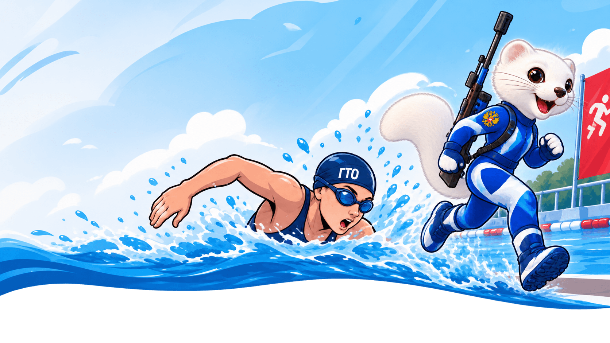
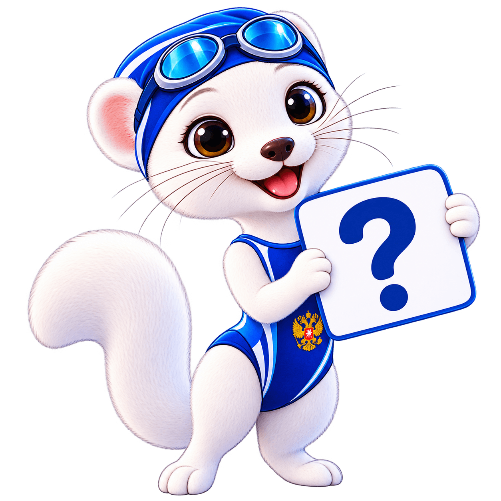

Попробуй то, что меняет правила игры! Представь: ты плывёшь по дорожке бассейна, выходишь на бортик, бежишь к огневому рубежу, сердце колотится, дыхание сбито — и прямо с ходу нужно попасть в мишень.

Аква биатлон — это уникальный гибридный вид спорта, который объединяет плавание, бег и стрельбу из пневматической винтовки.
Он был создан как летняя альтернатива классическому биатлону для участников проекта «Биатлон в школу, Биатлон в ГТО, Биатлон в колледж» и быстро стал самостоятельным, зрелищным и невероятно увлекательным направлением.
В отличие от традиционного биатлона, здесь не нужен снег, лыжи и специальная трасса. Достаточно бассейна или открытого водоёма, беговой дорожки и огневого рубежа с мишенями.
Проверь свою меткость!
Попадания: 0 / 5
Ты не просто бежишь — ты плывёшь, бежишь и стреляешь. Аква биатлон заставляет тело работать в трёх режимах одновременно. Это вызов самому себе.
Выходишь из воды и сразу бежишь к винтовке. Сердце колотится, руки дрожат — и именно в этот момент нужно попасть в цель. Это тренирует стрессоустойчивость.
Промахнулся? Вместо штрафного круга — отжимания (3 для девушек, 5 для юношей). Это добавляет азарта и превращает ошибку в возможность стать сильнее.
Не нужно быть мастером спорта. Стартуем с простых дистанций: эстафета 4×50 м, бег 300 м и 5 выстрелов. Постепенно нагрузка растёт.
Командный формат (эстафета): в команде 4 спортсмена (2 юноши и 2 девушки).
Кардио, суставы, осанка
Стрессоустойчивость, уверенность
Чувство плеча
Аквабиатлон — один из видов испытаний комплекса ГТО
Да, базовые навыки плавания необходимы. Но дистанции адаптированы под возраст и подготовку.
Всё впервые когда-то случается. Винтовка «Биатлон ГТО» лёгкая и безопасная. Тренер покажет всё с нуля.
Нет. Стрельба ведётся под контролем инструктора. Винтовки сертифицированы для использования в образовательных организациях.
Соревнования проводятся среди школьников (5-11 классы), студентов, педагогов и производственных коллективов.

Узнай, участвует ли твоё учебное заведение в проекте, запишись в секцию и приходи на первое занятие!
Хочу попробовать